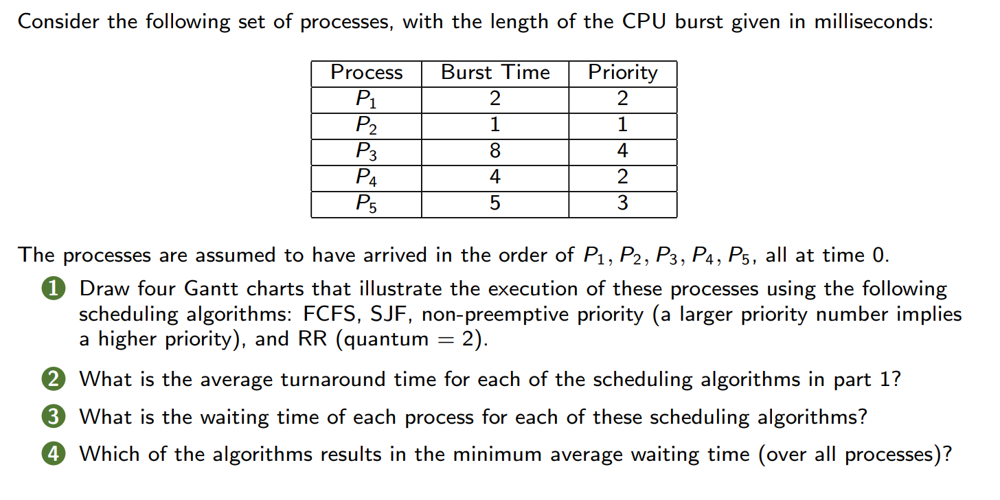

目录 / Table of Contents
- 基本概念 / Basic Concepts
- 调度标准 / Scheduling Criteria
- 简单调度算法 / Simple Scheduling Algorithms
- 多级反馈队列 (MLFQ) / Multilevel Feedback Queue
1. 基本概念 / Basic Concepts
CPU调度器 / CPU Scheduler
- 短程调度器 (Short-term scheduler)
- 从就绪队列中选择进程并分配CPU / Selects processes from the ready queue and allocates the CPU.
- 队列可按多种方式排序 / The queue may be ordered in various ways.
- 调度时机 / Timing
- 进程从运行态切换到等待态 / Process switches from running to waiting state.
- 进程从运行态切换到就绪态 / Process switches from running to ready state.
- 进程从等待态切换到就绪态 / Process switches from waiting to ready.
- 进程终止 / Process terminates.
- 非抢占式调度：仅在第1、4种情况下调度 / Nonpreemptive scheduling (only under 1 and 4).
- 抢占式调度：其他情况均为抢占式 / Preemptive scheduling (all other cases).
分发器 / Dispatcher
- Dispatcher module gives control of the CPU to the process selected by the short-term scheduler; this involves:
- switching context
- switching to user mode
- jumping to the proper location in the user program to restart that program
- 分发延迟 (Dispatch latency)：停止一个进程并启动另一个所需的时间 / Time to stop one process and start another.
2. 调度标准 / Scheduling Criteria
评价指标 / Common Scheduling Criteria
- CPU利用率 (CPU utilization)
- 尽可能保持CPU繁忙 / Keep the CPU as busy as possible.
- 吞吐量 (Throughput)
- 单位时间完成进程数 / Number of processes completed per time unit.
- 周转时间 (Turnaround time)
- 进程从提交到完成的总时间 / Total time from submission to completion.
- Arrival Time: 提交的时间（到达）不是开始运行时间
-
- 等待时间 (Waiting time)
- 进程在就绪队列中的总等待时间 / Time spent waiting in the ready queue.
- 响应时间 (Response time)
- 从请求提交到首次响应的时间 / Time from submission to first response (e.g., in interactive systems).
注：
- 从请求提交到首次响应的时间 / Time from submission to first response (e.g., in interactive systems).
- Burst Time: 进程在CPU上执行花费的时间，不包括I/O时间;
- Arrival Time: 进程进入就绪态的时刻
3. 简单调度算法 / Simple Scheduling Algorithms
先到先服务 (FCFS/FIFO)
- 规则：按到达顺序执行 / Execute jobs in arrival order.
- 示例：
- 三个作业A、B、C，运行时间均为10秒 / Three jobs (A, B, C) with 10s each.
- 平均周转时间：.
- Gantt Chart:

- 缺点：护航效应 (Convoy effect) / 长作业阻塞短作业
最短作业优先 (SJF)
- 规则：优先运行最短作业 / Execute the shortest job first.
- 示例：
- 作业A运行10秒，B、C各1秒 / A (10s), B (1s), C (1s).
- 平均周转时间：.
- The SJF algorithm is a special case of the general priority-scheduling algorithm.
- 规则：按优先级执行 / Execute jobs based on priority
- 示例：
- 进程表：P1(10,3), P2(1,1), P3(2,4), P4(1,5), P5(5,2).
- 执行顺序：P2 → P5 → P1 → P3 → P4.
- 问题：饥饿 (Starvation) / 低优先级进程可能永远无法运行
- Solution: Aging: as time progresses increase the priority
- Highest Response Ratio Next (HRRN): the next job is not that with the shorted estimated run time, but that with the highest response ratio defined as
抢占式短作业优先 (Preemptive SJF)
- Preemptive, and non-preemptive schedulers: Whether a job can preempt another job
- All modern schedulers are preemptive.
- The dispatcher performs a context switch.
- Think of preemptive version of SJF and Priority.
- Preemptive Shortest Job First (preemptive SJF, or Shortest Time-to-Completion First (STCF), or Shortest-Remaining-Time First (SRTF)
轮转调度 (Round-Robin, RR)
- RR runs a job for a time slice 时间片(sometimes called a scheduling quantum) and then switches to the next job in the run queue.
- 示例：
- 三个作业A、B、C，时间片1秒 / Time quantum = 1s.
- 平均响应时间：$$\frac{0+1+2}{3} = 1$$.
- 权衡：公平性 vs. 周转时间 / Trade-off between fairness and turnaround time.
- 轮转算法在周转时间表现较差。RR is awful in turnaround time.
Any policy that is fair, performs poorly on performance metrics such as turnaround time.
A Hybrid: Multilevel Queue
In Class Exercise

Answer
4. 多级反馈队列 / Multilevel Feedback Queue (MLFQ)
核心思想 / Core Idea
- 多级队列：按优先级划分队列 / Multiple queues with different priorities.
- 反馈机制：根据进程行为动态调整优先级 / Adjust priority based on job behavior.
规则 / Rules
- 优先级比较：高优先级队列的进程优先运行 / Higher priority jobs run first.
If Priority(A) > Priority(B), A runs (B doesn’t) - 同优先级轮转：同队列内使用轮转调度 / RR within the same priority.
If Priority(A) = Priority(B), A & B run in RR
注：如果题目明确指出用什么算法就按照题目来 - 新进程入队：初始置于最高优先级队列 / New jobs enter the topmost queue.
When a job enters the system, it is placed at the highest priority (the topmost queue). - 时间配额耗尽后降级：若进程用完时间配额，优先级降低 / Demote priority if time slice is fully used.
Once a job uses up its time allotment at a given level (regardless of how many times it has given up the CPU), its priority is reduced (i.e., it moves down one queue). - 周期优先级提升：定期将所有进程重置到最高队列 / Periodically boost all jobs to the top queue.
After some time periods, move all the jobs in the system to the topmost queue.
优化 / Optimizations
- 避免饥饿：周期优先级提升解决长作业饥饿 / Priority boost prevents starvation.
- 防止作弊：精确记录CPU时间防止进程滥用 / Track CPU time to prevent gaming.
In Class Exercise

Answer
5. Lottery Scheduling
比例份额调度 (Proportional-Share Scheduling)
- 核心思想：按比例分配CPU时间，而非优化周转时间或响应时间。
- 应用场景：虚拟化数据中心（如为Windows VM分配25% CPU，其余给Linux）。
- 公平性指标 (Unfairness Metric U)：
- 定义：两个相同任务完成时间的比值（理想时U=1）。
彩票调度 (Lottery Scheduling)
- 机制：
- 通过“彩票”随机选择下一个运行的任务，高优先级任务获得更多彩票。
- 关键特性：
- 彩票货币 (Ticket Currency)：用户自定义子任务间的彩票分配。
- 彩票转让 (Ticket Transfer)：临时转移彩票给其他任务。
- 彩票膨胀 (Ticket Inflation)：临时调整自身彩票数量。
- 优点：无全局状态，动态适应新任务加入。
步幅调度 (Stride Scheduling)
- 确定性算法：
- 每个任务的步幅（Stride）= 总票数 / 该任务票数
- Every time a process runs, we will increment a counter for it (called its pass value) by its stride to track its global progress
- At any given time, pick the process to run that has the lowest pass value so far 选择Pass最小的进程
- 示例：
- 缺点：新任务加入需全局状态调整（Pass值初始化问题）
6. Thread Scheduling
用户线程 vs 内核线程 (User-Level vs Kernel-Level Threads)
- 内核线程调度 (SCS - System-Contention Scope)：
- 由OS调度到CPU核心，全系统范围内竞争资源。
- 用户线程调度 (PCS - Process-Contention Scope)：
- 线程库将用户线程映射到LWP（轻量级进程），进程内优先级竞争。
- 模型：
- Many-to-One：用户线程阻塞导致进程阻塞（已淘汰）。
- Many-to-Many：动态平衡并发与效率（现代主流）。
调度策略对比
| 特性 | 用户线程 (PCS) | 内核线程 (SCS) |
|---|---|---|
| 管理方 | 用户态线程库 | 操作系统内核 |
| 阻塞影响 | 阻塞整个进程 | 仅阻塞当前线程 |
| 适用场景 | 高并发但无需多核 | 需多核并行或实时性要求 |
7. Multiple-Processor Scheduling
缓存亲和性 (Cache Affinity)
- 局部性原理：
- 时间局部性 (Temporal Locality)：频繁访问相同数据。
- 空间局部性 (Spatial Locality)：访问邻近数据。
- 亲和性优势：任务在相同CPU上运行可复用缓存状态，减少延迟。
多处理器调度模型
非对称多处理 (Asymmetric Multiprocessing - SQMS)
- 单队列调度 (Single Queue)：
-
Simply reuse the basic framework for single processor scheduling, by putting all jobs that need to be scheduled into a single queue
-
所有任务放入全局队列，轮流分配到各CPU。
-
问题：缓存亲和性差（任务频繁切换CPU）。
-
示例：（采用FCFS）
1
2
3
4
5Queue → A → B → C → D → E → NULL
CPU0: A → E → D → C → B
CPU1: B → A → E → D → C
CPU2: C → B → A → E → D
CPU3: D → C → B → A → E
-
对称多处理 (Symmetric Multiprocessing - MQMS)
- 多队列调度 (Per-CPU Queue)：
- One queue per CPU. Each queue will likely follow a particular scheduling discipline, such as round robin
- 每个CPU维护独立队列（如轮转调度）。
- 问题：负载不均（需任务迁移平衡）。
- 示例：
1
2
3
4Queue0: A → C → NULL
Queue1: B → D → NULL
CPU0: A → C → A → C → (迁移B)
CPU1: B → D → B → D
8. Real-Time CPU Scheduling
实时系统分类
- 软实时 (Soft Real-Time)：尽力满足截止时间，无严格保证（如视频流）。
- 硬实时 (Hard Real-Time)：必须在截止时间内完成（如航天控制）。
延迟类型 (Latencies)
| 延迟类型 | 定义 | 影响因素 |
|---|---|---|
| 中断延迟 Interrupt latency | 中断发生到服务例程启动的时间 | 内核态代码禁用中断。 |
| 调度延迟 Dispatch latency | 从停止当前任务到启动新任务的时间 | 内核态抢占、低优先级任务释放资源。 |
调度过程示例
1 | 事件 → [中断延迟] → 中断处理 → [调度延迟] → 任务切换 → 响应完成 |